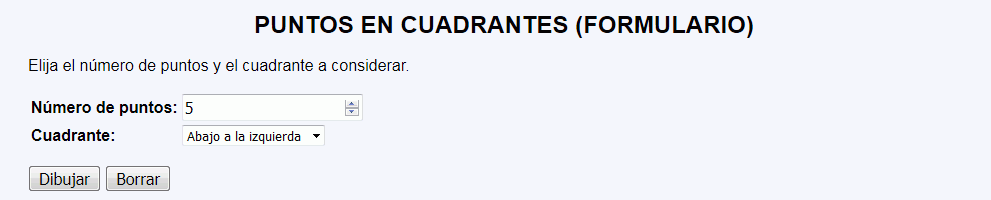
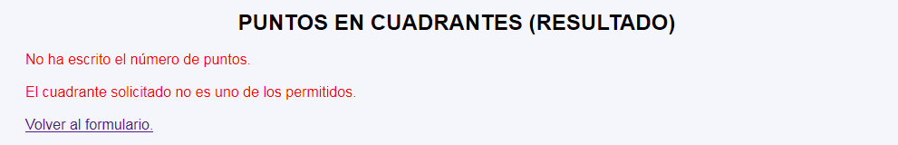
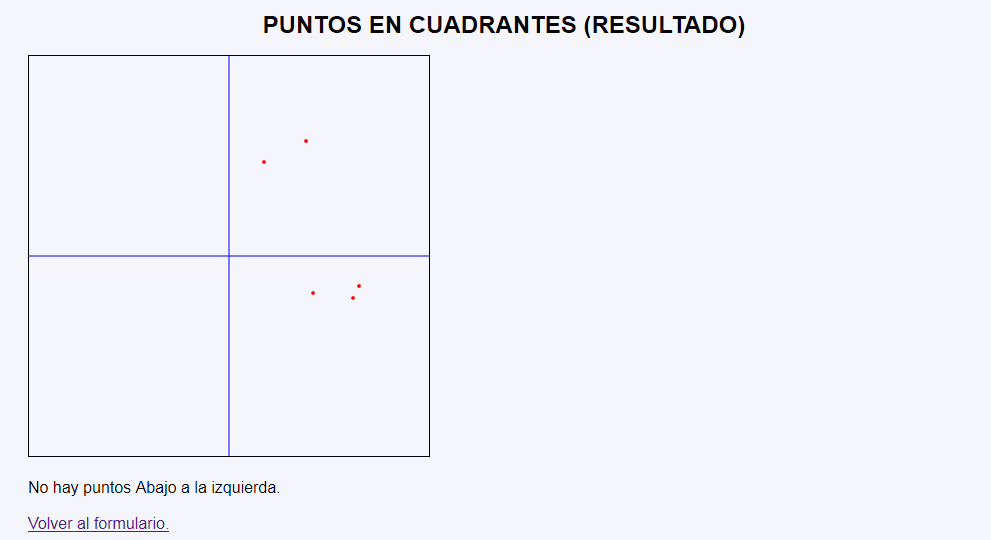

Puntos en cuadrante - Ejemplo de programa
Nota: El día del examen los alumnos no tienen acceso a este ejemplo, solamente tienen acceso a las capturas del apartado anterior.
Un ejemplo de programa puede probarse en la ventana siguiente:
En este ejercicio se debe crear un programa que muestre un número de puntos indicado por el usuario. Además, el programa señalará si alguno de esos puntos se encuentra en el cuadrante indicado por el usuario.



<p>
<svg version="1.1" xmlns="http://www.w3.org/2000/svg"
width="400px" height="400px" viewBox="-200 -200 400 400"
style="border: black 1px solid" >
<line x1="0" y1="-200" x2="0" y2="200" stroke-width="1" stroke="blue" />
<line x1="-200" y1="0" x2="200" y2="0" stroke-width="1" stroke="blue" />
<circle cx="77" cy="-115" r="2" fill="red" />
<circle cx="84" cy="37" r="2" fill="red" />
<circle cx="35" cy="-94" r="2" fill="red" />
<circle cx="124" cy="42" r="2" fill="red" />
<circle cx="130" cy="30" r="2" fill="red" /> </svg>
</p>
<p>No hay puntos Abajo a la izquierda.</p>
Nota: El día del examen los alumnos no tienen acceso a este ejemplo, solamente tienen acceso a las capturas del apartado anterior.
Un ejemplo de programa puede probarse en la ventana siguiente: